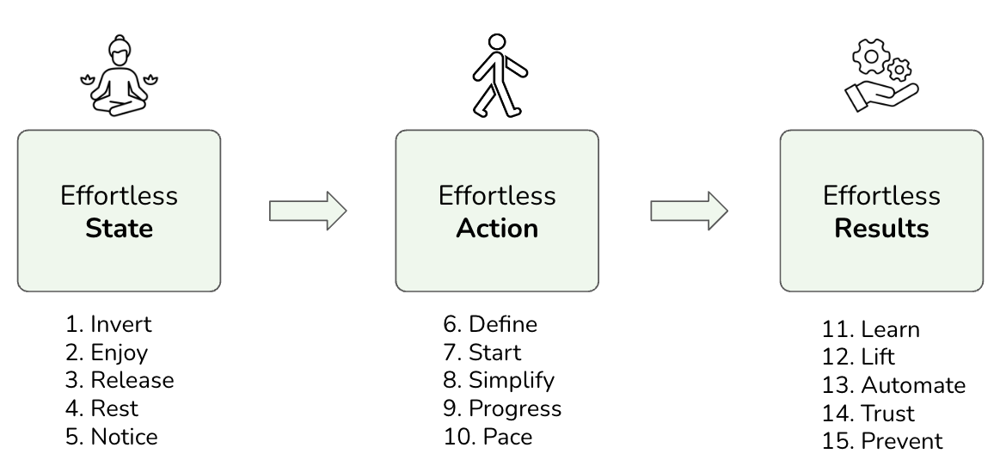
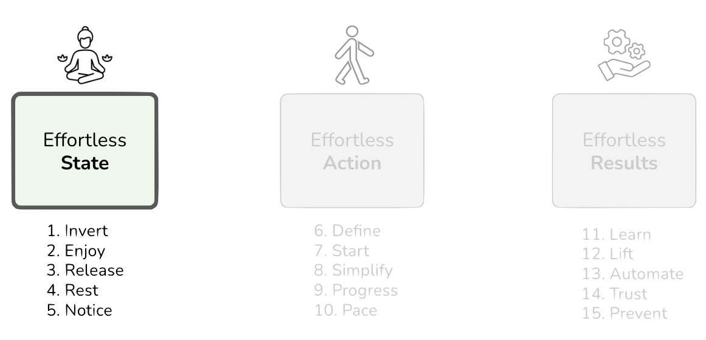
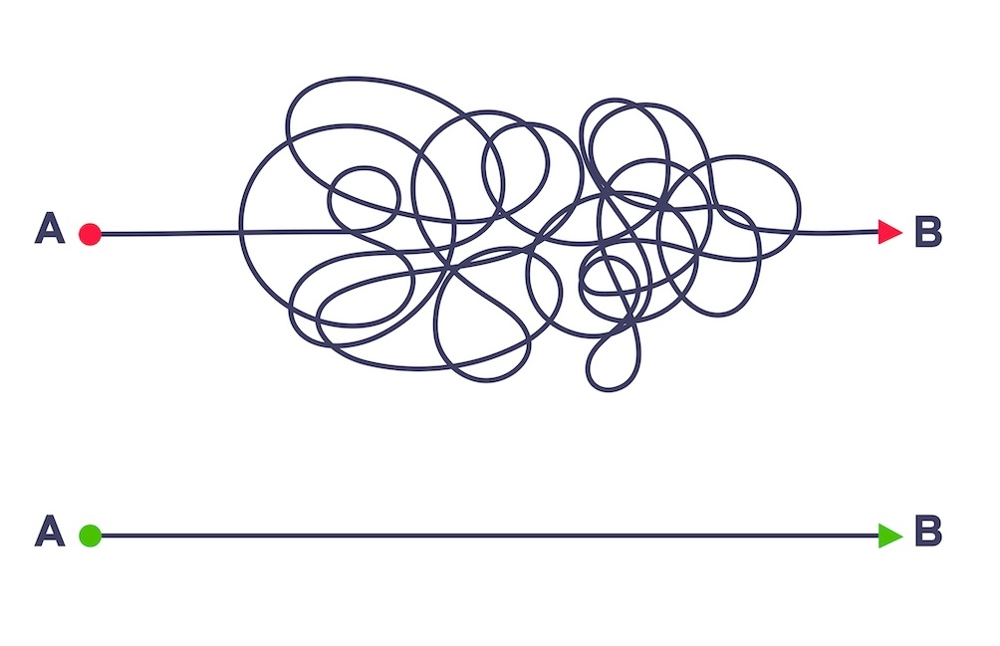
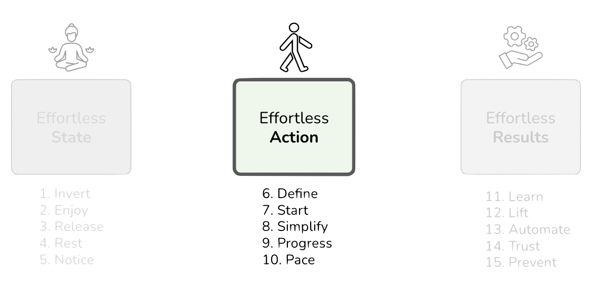
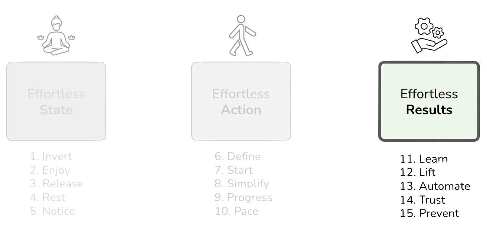

Effortless Architecture
IN THIS SECTION, YOU WILL: Get a summary of lessons learned from Greg McKeown’s book Effortless on how to functionally structure your work to make the essential activities the easiest ones to achieve.
KEY POINTS:
- Greg McKeown’s Effortless advocates a shift from hard work to smart, effective work by simplifying tasks and processes.
- Key principles include prioritizing important tasks, leveraging automation, and valuing ease and enjoyment in work.
- McKeown’s book offers valuable lessons for IT architects and software engineers, especially where complexity often dominates.
In Effortless: Make It Easier to Do What Matters Most, Greg McKeown challenges the idea that valuable work must feel punishing. His argument is simpler: remove avoidable friction so that important work becomes easier to start, sustain, and repeat.
This perspective is highly relevant for architects and software engineers, because our environments already contain enough unavoidable complexity. A grounded architecture practice should absorb necessary complexity without casually generating more of it. That makes this chapter more than a productivity note. It is about how architects reduce friction in systems, decisions, and collaboration so that the organization can focus on the hard problems that truly matter.
The core lessons are straightforward:
- Prioritize what genuinely matters to you.
- Look for ways to automate or simplify those everyday decisions.
- Design workflows that minimize strain and maximize efficiency.
- Remember that it’s perfectly okay to seek enjoyment and ease in your work.
McKeown’s central point is that we often create unnecessary complexity for ourselves. By removing self-imposed friction, we can improve results while reducing strain.
This idea complements Fred Brooks’s classic essay, No Silver Bullet: Essence and Accidents of Software Engineering. Brooks points out that no matter how groundbreaking a solution might be, it can’t remove the essential complexity of software development. Writing code involves dealing with intricate and abstract issues, and there’s simply no magic fix for the tough parts of the job.
Brooks addresses the essential complexity of software, while McKeown focuses on the accidental complexity we add ourselves. The combination is useful: accept what cannot be removed, but be ruthless about removing what can.
By separating what is essential from what is merely noise, architects and engineers can focus energy on the hard problems that actually matter.
IT Systems Don’t Have to Be as Complicated as We Make Them
One role of architects is to remind teams that systems and organizations do not have to be as complicated as we often make them. Dave Thomas tells a useful story about a company considering an OCR system to route internal mail. His suggestion was far simpler: use colored envelopes. The lesson is obvious but important. Not every problem deserves a sophisticated technical solution.
This idea fits McKeown’s broader argument. For architects and engineers, the practical implications are clear:
-
Simplifying tasks and processes helps teams handle complexity without amplifying it. Modular design, clean code, and clear interfaces make systems easier to understand and evolve.
-
Prioritization keeps attention on the few things that matter most, which improves outcomes and reduces waste.
-
Efficiency and productivity often come from automation: CI/CD pipelines, automated tests, and repeatable workflows.
-
A bias toward smart work instead of performative overwork supports continuous learning, resilience, and sustainability.
-
Collaboration and communication reduce friction between development, operations, and business teams.
-
Reducing avoidable stress makes it easier to sustain quality and focus over time.
The rest of this chapter follows McKeown’s three-part structure: Effortless State, Effortless Action, and Effortless Results.

Figure 1: The McKeown’s Effortless framework: Effortless State, Effortless Action, and Effortless Results.Effortless State
The Effortless State is the condition in which physical, emotional, and mental energy are aligned. In that state, focus is sharper, priorities are clearer, and difficult work feels more manageable.
When people reach this state, they work with more clarity and less friction. Decision-making improves, execution becomes steadier, and productivity becomes more sustainable.
The main obstacle is mental clutter: stale assumptions, emotional drag, and avoidable distractions. The more clutter we remove, the easier it becomes to operate with clarity.

Figure 2: Effortless State is a part of the McKeown’s Effortless framework (State, Action, Results).1. INVERT: What If This Could Be Easy?
Overwhelm is often caused not only by the task itself, but by the way we frame it. McKeown suggests replacing “Why is this so hard?” with “What if this could be easy?” That question interrupts the assumption that important work must also be difficult.
The follow-up question is equally useful: “How am I making this harder than it needs to be?” As Kent Beck put it, make the change easy, then make the easy change.

In software and architecture work, this inversion often reveals simpler and more durable paths.
For example:
-
Simplifying Code Maintenance With Clean Design:
When teams rush features and take shortcuts, they create technical debt that makes future changes harder. Modular code, clear interfaces, and readable implementations reduce that cost. -
Streamlining Deployment Processes:
Manual release processes add avoidable complexity. CI/CD systems such as CircleCI, Jenkins, GitHub Actions, or GitLab CI automate testing, building, and deployment, reducing error rates and improving flow. -
Simplifying User Interface (UI) Design With Standard Frameworks:
Teams do not need to invent every interaction pattern themselves. Standard frameworks can reduce cognitive load for both users and developers while improving consistency and maintainability.
That single question often exposes the simpler path.
2. ENJOY: What If This Could Be Fun?
Combining essential tasks with enjoyable activities can improve both productivity and morale. Work and play can coexist when teams intentionally add energy, meaning, and a sense of craft to routine work.
The point is not forced cheerfulness. It is to turn repetitive work into meaningful rituals by adding purpose, creativity, and small moments of enjoyment.
This approach keeps you engaged and motivated, turning even the most mundane chores into fulfilling experiences. When you allow joy to flow into your daily routine, you create a positive atmosphere where productivity and happiness thrive side by side.
For software teams, this can improve engagement, collaboration, and job satisfaction. For example:
-
Transforming Architecture Reviews:
Architecture reviews can become collaborative learning sessions rather than routine gate checks. A small amount of structure, participation, and friendly challenge can make them both more useful and more engaging. -
Revamping Technical Documentation:
Technical documentation often gets a bad rap for being boring. Why not shake things up? Infuse some creativity by using storytelling techniques or visual elements like diagrams and infographics. Personal anecdotes or a dash of humor can make the process more engaging for both writers and readers, resulting in user-friendly documentation. -
Keeping Up with Tech Trends:
Staying current with new technologies can feel like a chore. One useful approach is to connect learning to genuine interests. If someone enjoys gaming, game development or gamification may be a better entry point. If they care about visual design, UI and UX trends may create more sustained engagement.
When teams make essential work more enjoyable, they usually sustain quality and focus for longer.
3. RELEASE: The Power Of Letting Go
As the saying goes, “the best thing one can do when it is raining is to let it rain.” Embracing our circumstances allows us to focus on what we have instead of what we lack, which helps cultivate gratitude and emotional resilience.
It’s common to be weighed down by regrets, grudges, and unrealistic expectations. When faced with misfortune, it’s all too easy to obsess over our losses. Complaining can feel like a comfortable default, but it often adds to our emotional load.
For those in IT and software engineering, letting go of unnecessary emotional burdens can help foster a more positive mindset, ultimately enhancing both personal well-being and professional effectiveness.
Here are a few ideas that may inspire IT architects and their teams to release these burdens:
-
Overcoming Regret Over Past Decisions:
It’s natural for engineers and architects to wish they’d chosen a different technology stack or architectural approach after the fact. It’s important to remember that decisions were often made with the best knowledge available at the time. Instead of lingering on what went wrong, think about what was learned from those experiences. Reflecting on the positive outcomes or lessons can help shift the focus from regret to growth, empowering engineers to make informed decisions moving forward. -
Letting Go of Grudges Against Team Members:
Grudges against colleagues for past disagreements can create a tense work atmosphere. It’s beneficial to address conflicts through open dialogue and empathy. Holding onto grudges usually doesn’t lead anywhere constructive. When those feelings resurface, try to consciously let them go by recalling something positive about the colleague or their contributions. This practice can help nurture a more harmonious team environment, boosting morale and productivity. -
Embracing Change and Letting Go of Resistance:
Resistance to new technologies or methodologies can stand in the way of progress and innovation. Staying open to change and being willing to experiment can transform how we view new tools and approaches. Instead of seeing change as a threat, consider it an opportunity for growth. When you feel resistant, try to identify one positive aspect of the new approach and appreciate the chance to innovate. Embracing change can lead to more adaptability, driving continuous improvement and overall success.
By letting go of what holds us back, we can create a more positive and resilient mindset, benefiting both ourselves and those around us.
4. REST: Take a Break
Incorporating periods of rest and reflection improves productivity precisely because it protects recovery. Sustainable performance depends on not doing more today than you can recover from tomorrow.
For IT and software engineering professionals, integrating structured work sessions alongside rest periods can significantly boost productivity and wellness. Here are a few practical examples that IT architects might find helpful when encouraging their teams to take a break:
-
Incorporating Rest and Reflection Periods:
Engineers often move from task to task without pausing to recover, which leads to mental fatigue. Short breaks after focused work, such as a walk or a few minutes of quiet reflection, can restore clarity and improve focus. -
Balancing Workload and Recovery:
Overloading yourself with tasks that you can’t recover from by the next day can lead to ongoing fatigue and stress. It’s key to manage your workload effectively, ensuring that your daily tasks are balanced and realistic. Tools like task lists and time-blocking can help here. By prioritizing tasks and allotting time based on their complexity and importance, you can avoid scheduling high-intensity tasks back-to-back. This strategy not only ensures recovery but also supports consistent performance in the long run. -
Creating a Balanced Routine with Leisure Activities:
Working continuously without any leisure can drain your motivation and hinder creativity. Making time for leisure activities in your daily routine can serve as a refreshing mental break. Whether it’s picking up a hobby, spending time with friends, or just unwinding with a good book or a movie in the evening, these activities can recharge you. Striking a balance between work and leisure is essential for maintaining motivation and fostering creativity.
Taking breaks and allowing yourself time to rest isn’t just beneficial; it’s essential for sustainable productivity and your overall well-being., preventing long-term fatigue.
5. NOTICE: How to See Clearly
It’s easy to be physically present with others but not truly engaged. Often, we might be in the same room yet mentally miles away, making it challenging to notice and appreciate the people around us. When we are fully present, it makes others feel valued, even if just for a moment. This kind of undivided attention has a unique ability to create lasting impressions.
People frequently describe the warmth of being with someone who is truly attentive, as if that person has moved mountains just to be there with them. The essence of presence lies in simple yet powerful acts—being completely engaged in the moment. This genuine connection can strengthen relationships and create meaningful ties that resonate well beyond the moment.
To make the most of this, try cultivating a heightened sense of awareness. Focus on what truly matters and let go of the distractions around you. This practice not only boosts your productivity but also enriches your interactions with others.
One key to seeing others clearly is to set aside your personal opinions and judgments. Prioritize their truth over your own. Additionally, decluttering your physical space can often help declutter your mind. When your surroundings are organized, you create an environment that supports being present.
For those in IT and software engineering, developing this sense of presence can greatly enhance both productivity and interactions with colleagues. Emphasizing presence in the workplace fosters deeper connections and leads to better collaboration.
Here are a few practical ways IT architects can inspire their teams to embrace this clarity:
-
Truly Seeing and Listening to Colleagues:
Meetings often become multitasking exercises. Active listening changes their quality immediately: close irrelevant tabs, stop scanning messages, and acknowledge what others are saying before responding. -
Decluttering Both Physical and Digital Workspaces:
A messy workspace can easily lead to a cluttered mind, increasing stress and reducing efficiency. By clearing out both physical and digital clutter, you create a more organized environment that encourages focus and clarity throughout the day. -
Prioritizing Important Tasks Over Urgent Ones:
In the fast-paced world of engineering, it’s common to get caught up in tasks that feel urgent yet are less important. Using a tool like the Eisenhower Matrix can help you differentiate between what’s truly important and what just feels urgent. Focusing on essential tasks boosts long-term productivity and progress, allowing you to escape the cycle of constantly tackling urgent but less impactful issues.
Effortless Action
When you find yourself in an Effortless State, you can start to perform what Greg McKeown calls Effortless Actions. Basically, this means accomplishing more while trying less. It’s all about discovering a natural flow in your tasks and responsibilities, allowing you to reach your goals with minimal strain. The journey starts with taking that first obvious step, which can help you overcome procrastination and set things in motion. By steering clear of overthinking, you can focus on completing your tasks without getting bogged down by unnecessary details, which helps prevent mental fatigue and keeps your momentum going.
Making progress through Effortless Action involves pacing yourself instead of trying to power through everything at once. This more sustainable approach allows you to maintain steady momentum without the risk of burnout. What’s great about Effortless Action is that it enables you to exceed expectations without putting in excessive effort. It’s about aligning your work with your natural rhythm, making what you do feel less like a struggle and more like a smooth part of your day.

Figure 3: Effortless Action is a part of the McKeown’s Effortless framework (State, Action, Results).6. DEFINE: What “Done” Looks Like
To kick off an important project effectively, it’s essential to define what “done” looks like. Establishing clear conditions for completion will help you outline specific criteria to indicate when the project is truly finished. This clarity not only keeps your focus sharp but also helps you avoid unnecessary overextension. Once you meet these conditions, take a moment to acknowledge your progress.
In his work, McKeown shares some straightforward techniques that anyone can use daily to enhance focus and foster a stronger sense of achievement. One helpful approach is creating a “Done for the Day” list that focuses solely on meaningful progress. This list should highlight achievable tasks that contribute significantly towards your overall goal. By concentrating on these critical activities, you ensure that each day wraps up with a sense of accomplishment and forward momentum.
For IT and software engineering professionals, defining what “done” looks like helps maintain focus, prevents overextension, and keeps work pointed in a clear direction.
Here are a few examples to inspire IT architects in defining what “done” means for their organizations:
-
Completing a Feature Development:
When developing a new feature for a software application, it’s easy to fall into the trap of scope creep without clear boundaries. To tackle this, it’s critical to define what “done” means for that feature. This could include criteria like passing all unit and integration tests, undergoing a thorough code review, and updating the necessary documentation. For example, you might say, “Feature X is done when it passes all unit tests, integrates without errors, is reviewed by a peer, and is included in the user manual.” This clarity helps the development team stay focused, avoid unnecessary additions, and meet deadlines. -
Finishing a Bug Fix:
Bug fixes can often lead to a cycle of hunting for new issues if there isn’t a clear endpoint. To avoid this pitfall, it’s beneficial to determine under what conditions the bug fix should be considered complete. This might involve reproducing the problem, implementing a solution, testing it across different environments, and updating the issue tracker. You could document the process as follows: “Bug Z is done when the issue is reproduced, fixed, tested in both staging and production environments, and marked as resolved in the issue tracker.” Having these explicit criteria helps developers steer clear of endless cycles of bug-fixing and ensures that fixes are properly verified and documented. -
Completing a Code Review:
Code reviews can sometimes stretch on longer than necessary without clear criteria for when they’re finished. To simplify this process, it’s helpful to set specific criteria for a complete review, such as checking for adherence to coding standards, verifying functionality, and ensuring that there are no critical issues outstanding. You might outline the steps like this: “The code review is done when the code meets our standards, passes all tests, and any identified issues have been addressed or noted for future improvement.” Having clear completion criteria can make code reviews more efficient and ensures they provide value without becoming a bottleneck.
By taking the time to define what “done” means for different tasks, you can cultivate a more productive and satisfying workflow.
7. START: The First Obvious Action
The idea of “done” is not only about finishing work; it also helps start work. Clear completion criteria create focus and make the first step easier to identify.
But getting started can be tough, and often people find themselves stuck because they’re unsure of how to take that initial step. It helps to make the first action as obvious as possible. Break it down into the smallest, most concrete step you can think of, and then give it a name. For instance, if your goal is to write a report, your first step could simply be “open a new document.”
To help identify that first obvious action, McKeown suggests a couple of straightforward techniques:
-
Spend sixty seconds visualizing your desired outcome. Picture what success looks like and keep that image in mind as you move forward. This brief moment of focus aligns your efforts and gives you direction, which makes starting a bit easier.
-
Consider starting with a ten-minute microburst of focused effort. A short, concentrated session can overcome initial inertia and create momentum.
By breaking down the first action into small, obvious steps and visualizing your goals, IT and software engineering professionals can effectively launch essential projects. This approach minimizes hesitation and makes it easier to approach tasks with confidence.
Here are a few examples to illustrate how IT architects can inspire their teams by finding those first obvious actions:
-
Beginning a New Feature Development:
When developing a new feature for a software application, the feature is considered complete when it passes unit tests, gets integrated into the main codebase, and is documented. The first obvious action might be to create a new branch in your version control system. This could involve simply launching your version control tool (like Git) and executing a command to create a new branch with:git checkout -b new-feature-branch. It’s a small action, but it sets the stage for the work ahead. -
Initiating a Bug Fix:
When addressing a critical bug, the fix is complete once the issue has been reproduced, resolved, tested, and verified in the staging environment. The first step here could be reproducing the bug in your development setup. This means identifying the conditions under which the bug appears and replicating those in your environment. Successfully reproducing the bug gives you a clear starting point for troubleshooting and creating a fix. -
Initiating a Documentation Task:
When it comes to updating the user manual with new feature information, completion happens when the new features are thoroughly described with examples and integrated into the document. The first obvious action could be to open the text editor with the documentation file. Just locating and opening the user manual file in your preferred text editor (like MS Word or Google Docs) is a simple but critical step toward adding new content.
By focusing on these straightforward actions, you set yourself up for a better start and pave the way for progress in your projects.
8. SIMPLIFY: Start With Zero
When it comes to completing essential projects, a helpful strategy is to focus on removing unnecessary steps instead of just simplifying existing ones. Not every task requires going the extra mile, and by trimming down your actions, you can streamline your workflow and save your energy in the process. It’s about maximizing what you don’t do and measuring progress in small increments, which can help ensure consistent advancement.
This idea is reminiscent of the “Swedish Death Cleaning philosophy,” where the emphasis is on decluttering your life by getting rid of items that no longer serve a purpose. You can apply this same principle to your project by eliminating redundant tasks and concentrating only on what truly matters. By doing this, you maintain clarity and efficiency, ensuring that your efforts are focused on meaningful progress instead of being distracted by unnecessary activities.
For IT and software engineering professionals, adopting the “Start With Zero” approach can lead to a more efficient, productive workflow. Here are a few examples to inspire how you might begin this process in your organization:
-
Streamlining Feature Development:
Developing a new feature for a software application often involves extensive planning, numerous design iterations, and thorough testing phases. Instead of this traditional approach, consider starting with zero by cutting out unnecessary steps like excessive revisions. You might begin with a simple prototype or Minimum Viable Product (MVP) that includes only the core functionality. This way, you focus on delivering essential features quickly, allowing for testing and iteration based on actual user feedback. -
Reducing Meetings:
When working on a collaborative team project, there’s often a tendency to hold frequent status meetings and create detailed progress reports. Instead of this routine, think about starting with zero by eliminating unnecessary meetings and excessive reporting. You could replace many meetings with asynchronous updates through collaboration tools like Slack or Trello, reserving only essential meetings with clear agendas and time limits. Cutting down on unnecessary meetings can free up more time for actual work, which in turn helps maintain focus on what’s truly important. -
Optimizing Deployment Processes:
The traditional approach to deploying a new version of software often involves multiple manual steps, extensive testing environments, and comprehensive checklists. Instead of following this method, consider starting with zero by removing redundant manual steps and making the process more efficient. You could implement Continuous Integration and Continuous Deployment (CI/CD) pipelines to automate deployment, ensuring that automated tests catch issues early on. This automation not only reduces the chance for human error but also speeds up releases while maintaining consistent quality.
By starting with zero, you can enhance clarity and effectiveness in your projects, paving the way for more manageable and successful outcomes.
9. PROGRESS: The Courage to Be Rubbish
When starting a project, it helps to accept that the first version will not be perfect. A “zero-draft” approach lowers the barrier to starting and reduces the drag of perfectionism.
Fred Brooks captured this well: “Good judgment comes from experience, and experience comes from bad judgment.” Early versions do not need to be polished. The courage to produce work that is rough at first is a precondition for improvement.
If you’re in IT or software engineering, embracing the courage to create imperfect versions can help you move past perfectionism, learn faster, and build a foundation for continuous growth. This mindset encourages experimentation and iteration, which often leads to better results over time.
Here are a few examples of how that mindset applies in practice:
-
Starting a New Feature:
When developing a new feature for a software application, it’s helpful to approach it with the understanding that the first version might be basic and have its fair share of flaws. Consider writing zero-draft code—just focus on getting a workable version of the feature out, without worrying about how clean or optimized it is. Start with the core functionality, using straightforward logic. This early “rubbish” version makes it easier to spot main challenges and requirements, laying the groundwork for future enhancements. -
Initial Project Planning:
In the early stages of planning a new software development project, it’s key to acknowledge that your first project plan may not be entirely complete or realistic. Drafting a zero-draft plan can help here—it might mean sketching a rough outline of the project timeline, key milestones, and resource allocations without stressing over perfect accuracy. Whether it’s creating a simple Gantt chart or jotting down milestones on a whiteboard, having something in place gives you a starting point for discussions and refinements, allowing the team to pinpoint potential issues and make adjustments as needed. -
Learning a New Technology:
When diving into a new programming language or framework, it’s important to realize that your first attempts are likely to be filled with mistakes and inefficiencies. Embrace a zero-draft learning phase—try writing simple programs or small projects just to get a feel for the syntax and features without getting too caught up in best practices. Following beginner tutorials and replicating code examples can be a great way to learn. These early experiences not only build your comfort level with the new technology but also set the stage for more advanced learning down the line.
10. PACE: Slow if Smooth, Smooth is Fast
Maintaining a deliberate and measured pace can lead to more meaningful and lasting results without exhausting yourself. This balanced approach enables you to work efficiently while also taking care of your well-being and maintaining high output standards.
To sustain productivity, it helps to set an effortless pace: slow is smooth, and smooth is fast. It’s important to reject the false economy of “powering through,” as this often results in burnout and decreased efficiency. Instead, think about crafting a balanced approach to your work. Define a range for your efforts—determine a minimum you’ll do and a maximum you’ll allow yourself. This way, you ensure a consistent, manageable workload that promotes steady progress.
Remember, not all progress is created equal. It’s beneficial to focus on the quality and significance of your achievements rather than simply counting the quantity.
By adopting this balanced approach and setting a sustainable pace, IT and software engineering professionals can enhance their productivity while ensuring quality and well-being. This method underscores the importance of consistent, manageable efforts that lead to impactful and lasting results.
Here are a few examples for IT architects to inspire their teams in setting an effortless pace:
-
Learning a New Technology:
When diving into a new programming language or framework, many people tend to cram intensive study sessions that often lead to burnout and poor retention. A more balanced way would be to invest 30 minutes to 2 hours a day. By integrating learning into your daily routine with shorter, consistent sessions, you allow time for reflection and practice. This steady approach often leads to a deeper understanding and better retention of new skills. -
Managing Code Development:
In the traditional approach to developing complex software features, it’s easy to fall into the trap of lengthy coding marathons that can lead to burnout and errors. A balanced strategy could involve setting a daily coding goal of 4 to 6 hours, with breaks in between. Scheduling coding sessions with regular short breaks can help prevent burnout, reduce mistakes, and improve the overall quality of your code over time. -
Debugging and Testing:
Often, debugging and testing can turn into marathon sessions that end up feeling frustrating and chaotic. Instead, consider allowing 1 to 3 hours daily dedicated to these tasks. Taking a methodical approach and integrating regular breaks for reassessment can lead to more effective problem-solving and thorough testing, ultimately resulting in more robust software.
Finding the right balance between pace and quality usually leads to more sustainable and satisfying work.
Effortless Results
Effortless Results naturally emerge when you consistently cultivate your Effortless State and take Effortless Action. By keeping a clear objective in mind, breaking tasks down into tiny, manageable first steps, and maintaining a steady, manageable pace, you can achieve your desired outcomes with much less stress. The real magic of Effortless Results, though, lies in their sustainability.
These results flow to you repeatedly with minimal extra effort. You’ve built a system where success becomes a cycle, rather than a fleeting moment. By refining your process and cutting out unnecessary steps, you create a situation where your efforts lead to ongoing benefits. This approach supports high productivity and helps you meet your goals consistently, allowing for a smooth and continuous stream of accomplishments.
At its core, achieving Effortless Results is about establishing a self-sustaining loop of success. By embracing the ideas behind the Effortless State and Effortless Action, you lay the groundwork for ongoing achievement, making it easier to reach your objectives time and time again without feeling burnt out.

Figure 4: Effortless Results is a part of the McKeown’s Effortless framework (State, Action, Results).11. LEARN: Leverage the Best of What Others Know
To achieve Effortless Results, McKeown suggests that it’s important to stand on the shoulders of giants. Essentially, this means taking advantage of the insights and discoveries made by experts and pioneers in your field. By using their knowledge as a base, you can accomplish more while putting in less effort.
Another key point is the focus on learning principles rather than just memorizing facts and methods. By grasping the first principles, you can apply these concepts across different contexts, which enables you to adapt and innovate more effectively. This grounding in fundamental truths can simplify complex tasks and make them much more manageable.
Effortless Results are all about a deep understanding of first principles and the ability to apply them creatively and consistently. As you build on the knowledge of others and incorporate your unique insights, you pave a sustainable path toward continuous achievement and innovation.
For IT and software engineering professionals, understanding and applying first principles while leveraging the insights of experts can lead to some impressive outcomes. This mindset encourages innovation and ongoing improvement, helping to break down complex tasks and maximize productive efforts.
Here are a few examples that could inspire IT architects and help organizations make the most of what others have learned:
-
Applying Design Patterns in Software Development:
When you’re developing a scalable and maintainable software application, it’s beneficial to start with first principles. Get familiar with the fundamentals of common design patterns like Singleton, Factory, Observer, and MVC. Books such as “Design Patterns: Elements of Reusable Object-Oriented Software” by the Gang of Four can be quite helpful. By applying these well-established patterns, you can address scalability and maintainability more efficiently, creating a robust and flexible application framework. -
Innovating with New Technologies:
If you’re looking to integrate machine learning into an existing product, begin with the basics—understand machine learning algorithms, data preprocessing, model training, and evaluation. Open-source libraries like TensorFlow or PyTorch can be great resources, allowing you to build on existing models and research. This foundational knowledge combined with expert insights can facilitate a smooth integration of advanced technologies, ultimately enhancing functionality without too much added effort. -
Optimizing Database Performance:
To improve relational database performance, start with the fundamentals: normalization, indexing, query optimization, and transaction management. Sound principles and expert practices usually produce significant gains.
12. LIFT: Harness the Strength of Ten
Teaching others is one of the best ways to learn more deeply. When you prepare to teach, you find yourself more engaged and focused. You listen more intently and think critically about the underlying concepts so you can explain them in your own words. This process not only reinforces your understanding but also enhances your ability to convey complex ideas with clarity.
Think of teaching as a way to leverage your impact—your influence grows exponentially when you not only share knowledge but also empower others to teach. The learning you gain from living what you teach can be profound. Sharing stories that are relatable and easy to understand can make your message resonate even further.
It’s important to ensure that your messages are simple and clear. This isn’t just a communication tactic; it’s a powerful way to maximize your impact. When you simplify and clarify your communication, you help others grasp and remember the knowledge you share. This approach underscores your vital role in knowledge sharing and the difference you can make in others’ learning journeys.
Take, for instance, the motivation behind writing this book. I aimed to create a reusable resource that teaches practical approaches to running an architecture practice while also providing material that can be passed on to others.
By focusing on teaching and encouraging others to teach, IT and software engineering professionals can significantly enhance their impact and cultivate a culture of continuous learning. This method not only solidifies their own knowledge but also equips their teams with the skills necessary for increased efficiency and innovation.
Here are a few ideas for IT architects looking to inspire their organizations to harness the strength of ten:
-
Promoting Continuous Integration/Continuous Deployment (CI/CD): Imagine an engineer who has successfully implemented CI/CD pipelines. They decide to run workshops to show the team how to set up and maintain these pipelines. By providing hands-on experience with tools like Jenkins, GitHub Actions, or GitLab CI and sharing real examples from current projects, the engineer illustrates the impact of CI/CD. This practical approach helps the team learn how to automate testing and deployment, resulting in more reliable releases and a quicker development cycle.
-
Enhancing Security Practices: Consider a security expert dedicated to improving the team’s approach to cybersecurity. They could conduct training sessions focused on best practices, common vulnerabilities, and mitigation strategies. By using relatable stories to highlight security’s importance, the expert shares checklists and templates for secure coding and threat modeling. In the end, team members become more security-conscious and capable of applying robust security measures, which ultimately reduces the risk of breaches.
-
Mentoring on Effective Documentation: Think of a developer who excels at creating clear, concise documentation. They might hold workshops to teach the team how to write effective documentation across various formats—ADRs, RfCs, API documentation, user guides, and technical specs. By showcasing examples of well-crafted documentation and discussing the elements that make it effective, the developer encourages team members to practice and peer-review each other’s work. This focus on improving documentation quality leads to better knowledge sharing and smoother onboarding for new team members.
13. AUTOMATE: Do It Once and Never Again
Automating essential tasks helps free mental space for work that actually requires judgment. Checklists are part of the same logic: they improve consistency without depending on memory.
For IT and software engineering professionals, automating routine tasks and using checklists can streamline workflows, reduce errors, and free up mental capacity for more important activities. This approach can lead to enhanced efficiency, consistency, and overall productivity.
Software engineering practices have advanced the level of automation, but it’s always useful to remind ourselves of the basics and the value of automation. Here are some examples that IT architects can draw inspiration from to help their organizations automate processes:
-
Automating Code Quality Checks:
Checking code quality through manual reviews can take up a lot of time and might not always be reliable. A better way is to incorporate high-tech automation by integrating tools like SonarQube or ESLint into your CI/CD pipeline. You can set these tools to run automated checks with every commit, giving you immediate feedback on any code quality issues. This results in consistent code quality checks that help elevate overall standards and minimize the necessity for manual reviews. -
Standardizing Development Environments:
Manually setting up development environments for new team members or projects can be quite tedious and error-prone. A more efficient approach is to use containerization tools like Docker to create standardized environments. By preparing Docker images that include all the necessary tools, libraries, and configurations, you can easily share them with your team. This means new environments can be established quickly and consistently, reducing setup time and avoiding configuration hiccups. -
Automating Data Management:
Handling database updates and management tasks manually often leads to errors and inconsistencies. A more effective solution is to implement automated data management scripts using tools like Python or scheduled SQL scripts with cron jobs or similar tools. You can write scripts to manage routine tasks like backups, updates, and data migrations. This results in a more streamlined data management process that ensures data integrity while freeing up your time for more strategic tasks.
14. TRUST: The Engine of High-Leverage Teams
When trust is present in a team, maintaining and managing relationships becomes much simpler. Team members can swiftly divide tasks among one another, and there’s a real sense of comfort when it comes to discussing problems openly and honestly. Instead of hoarding information, everyone feels encouraged to share insights, which leads to better decision-making and fewer conflicts. When there’s trust, team members aren’t afraid to ask questions, and this naturally boosts both the speed and quality of decisions made. You may even find yourself enjoying the teamwork experience more. Ultimately, this trust allows everyone to focus on completing important tasks rather than just trying to keep the peace.
On the other side, low trust creates a range of challenges. Even sending a simple text or email can feel exhausting as you second-guess every word for potential misinterpretations. Conversations can become anxiety-inducing, and without trust in a colleague’s ability to deliver, you might end up checking in constantly, reminding them of deadlines, and hovering over their work. This lack of trust can stall progress and hinder team performance.
Within every team, there are individuals juggling interrelated roles and responsibilities, often at a fast pace. When trust is absent, differing goals and priorities can lead to friction, leaving everyone feeling worn down. Think of trust as the engine oil for a well-functioning team; it keeps everything running smoothly. When trust runs low, the team is likely to stall or struggle.
Every relationship in a team involves three elements: Person A, Person B, and the structure governing their interactions. When trust issues arise, it’s common for individuals to blame one another—managers may fault employees and vice versa. However, every relationship has its own structure, often unspoken and unclear. Low trust typically stems from vague expectations, conflicting goals, and ambiguous roles and rules.
High-trust agreements help alleviate these issues by clearly defining:
- Results: What are we aiming to achieve?
- Roles: Who is responsible for what?
- Rules: What are the minimum standards we need to maintain?
- Resources: What tools, people, or budget are necessary?
- Rewards: How will progress be assessed and recognized?
When expectations and structures are clear, it fosters a high-trust environment where teams can operate efficiently and effectively. Making the right hire can lead to sustained success. Consider the Three I’s Rule: hire individuals with integrity, intelligence, and initiative. Design high-trust agreements focused on results, roles, rules, resources, and rewards.
Working as an architect in a high-trust organization is often much simpler. Conversely, in low-trust environments, individuals may start to expect architects to act like police officers, using governance processes as a means to impose controls when trust is lacking.
By nurturing and maintaining a high-trust environment, IT and software engineering teams can operate more efficiently. Trust decreases friction, enhances decision-making, and cultivates a positive, collaborative culture where everyone feels valued and empowered.
Here are some practical examples for IT architects looking to inspire their organizations toward a high-trust environment:
-
Open Communication and Problem-Solving: Encouraging a culture of open dialogue can be vital, especially when addressing a critical software bug that might delay a release. Organizing regular team stand-ups and retrospectives provides a safe space for raising issues without fear of blame. This openness promotes collaboration, helping team members leverage their collective skills to identify and fix problems quickly.
-
Delegating Tasks Efficiently: When assigning a complex module development to a junior engineer or IT architect, it’s important to trust in their ability to handle the task. Clearly communicate what’s expected while also offering support. Granting them autonomy to tackle the problem boosts their confidence and helps them develop new skills. At the same time, it frees up senior team members to focus on other crucial tasks, ultimately enhancing overall team productivity.
-
Making the Right Decisions: In a high-trust environment, decision-making becomes a collaborative effort. Team members feel comfortable sharing their viewpoints, which leads to better outcomes. Fostering this culture can create an energized team that thrives on collective input and shared goals.
By prioritizing trust, teams can not only navigate challenges more smoothly but can also cultivate an environment where innovation and collaboration flourish.
15. PREVENT: Solve the Problem Before It Happens
Small preventative measures today can eliminate much larger problems later. Reminders, automation, and checklists are simple examples of this principle.
The goal is not only to manage problems as they arise, but also to prevent them where possible.
This proactive approach is what many would call the long tail of time management. When you dedicate your time to tasks that offer long-term benefits, those little efforts tend to pay off in big ways over time. For instance, spending a couple of minutes to tidy up your workspace can save you countless hours searching for lost items later. Embrace that “measure twice, cut once” mindset to catch mistakes before they happen.
In IT and software engineering, proactive work reduces disruption, saves time, and leaves more room for innovation and improvement.
Here are a few examples that IT architects might find inspiring for preventing problems in their organizations:
-
Regular Code Reviews:
A routine code review process helps maintain code quality and catch issues early. Pull request templates and review tooling can make that process more consistent while also supporting knowledge sharing. -
Setting Up Monitoring and Alerts:
Implementing monitoring and alerting systems can ensure that you’re not finding out about system outages or performance problems only after they’ve affected users. Tools like Prometheus, Grafana, and New Relic can help monitor system performance. Setting up alerts enables your team to be notified of any anomalies or dips in performance. This allows for early detection, so you can tackle issues before they disrupt users, ultimately improving system reliability and user satisfaction. -
Regular Security Audits:
Finding security vulnerabilities only after a breach can lead to serious downtime and data loss. Regular security audits and adherence to best practices can go a long way in preventing these issues. Scheduling regular security audits with tools like OWASP ZAP and Nessus, while also training the team on secure coding practices, ensures that vulnerabilities are kept at bay. This proactive strategy minimizes the risk of breaches and keeps data safe.
By thinking ahead and taking proactive measures, you can create a more resilient and efficient environment for everyone involved.
The Road to Effortless Achievement
Achieving great results doesn’t always have to be a struggle. When you embrace the idea that things can be easy and even enjoyable, it opens you up to solutions that feel effortless. The first step is to clearly define your goal and identify a small yet meaningful action you can take. This approach sets you on a path of simple actions that lead to steady and significant progress.
By leveraging knowledge, automation, and trust, you can create a system that delivers consistent results. This kind of system not only simplifies your life but also boosts your productivity. It’s a reminder that life can be less complicated than we often make it. When you adopt a mindset focused on ease and enjoyment, you pave the way for a more streamlined and fulfilling journey toward your organizational goals.
For architects, that mindset has a practical implication: good architecture should make important work easier. It should lower the cost of change, reduce cognitive load, clarify responsibilities, and remove needless coordination overhead. In that sense, effortless architecture is not about laziness. It is one sign that an architecture practice is working as intended.
This also connects to later strategy and transformation chapters: the more consequential the change, the more valuable it becomes to remove accidental complexity early so the organization can focus its energy on the trade-offs that are genuinely hard.
To Probe Further
- Effortless: Make It Easier to Do What Matters Most, by Greg McKeown, 2021
- Essentialism: The Disciplined Pursuit of Less, by Greg McKeown, 2020
- Here’s why enterprise IT is so complex, by Gregor Hohpe, 2018
- Tidy First?, by Kent Beck, 2023
- Execution Management Matrix
- The Eisenhower Matrix
Questions to Consider
Use the following questions to consider where complexity in your environment is necessary and where it is simply creating friction.
- How does the idea of achieving goals with minimal strain resonate with your personal work ethic and habits?
- What tasks could benefit from automation to enhance your productivity and reduce unnecessary effort?
- Have you experienced moments when you were physically rested, emotionally unburdened, and mentally energized? What facilitated these moments?
- What mental clutter currently hinders your productivity, and how can you clear it to foster an effortless state?
- How can you apply the concept of “make the change easy, then make the easy change” in your work?
- How can you combine essential tasks with pleasurable activities to enhance your productivity and well-being?
- What regrets, grudges, or unrealistic expectations are you holding onto that might be hindering your progress?
- How do you currently balance work and rest to prevent burnout and maintain high performance?
- What structured routines can you implement to incorporate rest and reflection periods into your workday?
- What steps can you take to declutter your physical and digital workspaces to improve focus and efficiency?
- What experts and pioneers in your field can you learn from to build on their knowledge and achieve more with less effort?
- How can you leverage teaching as a tool to reinforce your knowledge and multiply your impact?
- What complex concepts can you simplify and clarify to make them easier for others to understand and remember?
- What clear expectations and structures can you establish to create a high-trust agreement in your projects?
- How can you adopt a proactive approach to identify and solve potential problems before they occur?
Notes on Strategy |
|||
| ← | → | ||